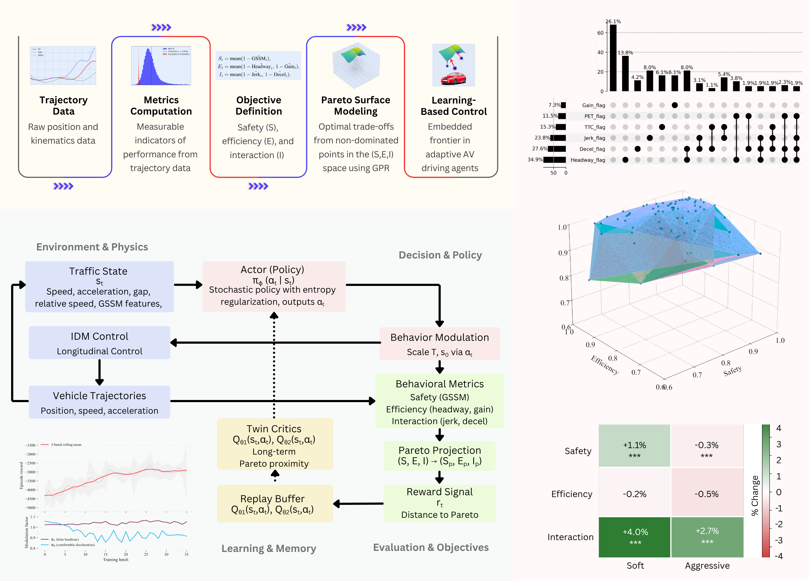
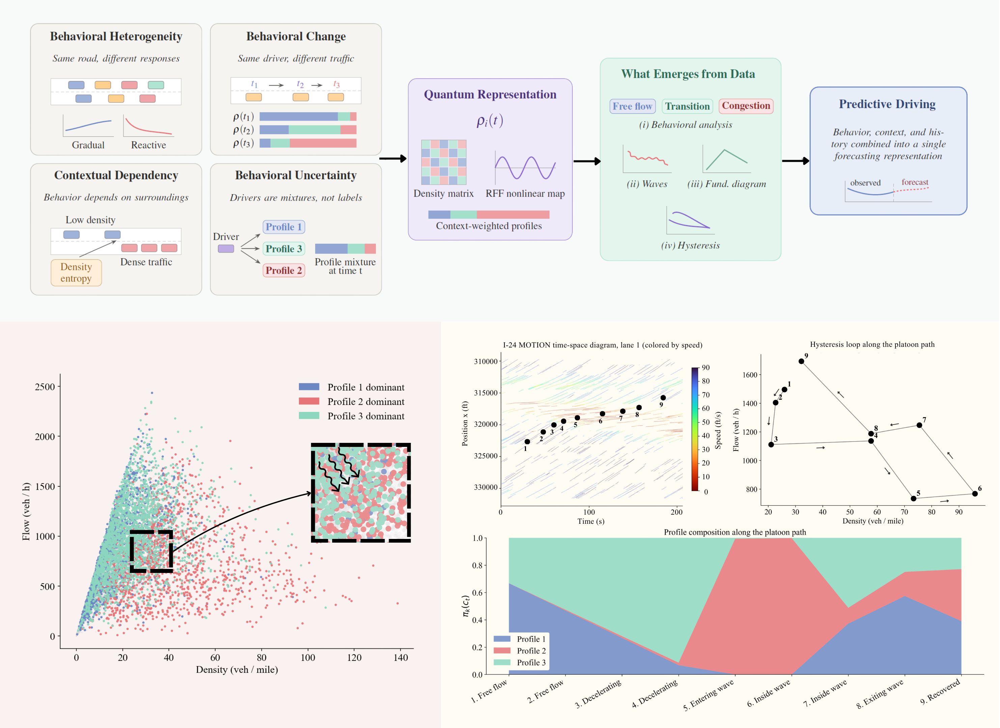

Mohammad Elayan
Current focus, research areas, and the full publication record.
§01 · Current Focus
Automated vehicles are expected to balance safety, flow, and smoothness, and to interact well with drivers who all behave differently. My work learns both the balance and the behavior from real data.
Thread 1 · AV Control
Most AV controllers resolve the conflict among objectives with one hand-weighted reward. This thread measures how real automated vehicles trade off risk, flow, and smoothness in naturalistic trajectory data, builds the empirical frontier of what real driving achieves, and trains reinforcement learning policies in SUMO to drive toward it.
17.6% → 12.6%
Share of time steps violating two or more objectives, against a baseline car-following model.
5 of 5
Facility types held out of training where compound violations fell, without retraining.

Thread 2 · Behavior
Instead of fixing driver types or functional forms in advance, this thread represents each driver as an evolving density matrix that holds the full range of observed behavior, updates with context and history, and learns how behavioral variables interact. Trained without labels on trajectory data, it recovers interpretable behavioral profiles and the smooth transitions between them.
Hysteresis
A driver at the same speed entering and leaving a wave gets different profiles, because the state carries its recent history.
Fundamental diagram
Profiles map onto distinct traffic regimes, though the model never saw aggregate flow or density.

Thread 3 · Synthesis
Joins the two threads. The empirical alignment target is conditioned on the behavioral profiles and short-horizon forecasts of the drivers around the AV, so it seeks the balance suited to the drivers actually present. Evaluated at two scales: individual driving against fixed-target and baseline controllers, and traffic outcomes at 10% to 50% AV penetration, including wave damping, freeway throughput, and intersection delay.
Next · Interaction
Drivers remember recent encounters and respond to their neighbors both one by one and as a group. This work models memory and group effects together using tensor networks and process tensors, adding each effect in turn to measure what it contributes to prediction, and compares quantum and ordinary probabilistic forms at comparable parameter budgets. It extends from individual drivers to whole neighborhoods of vehicles.
§02 · Research Areas
01
Measuring how automated vehicles balance safety, traffic flow, and smoothness in real driving, building the empirical frontier of what is achievable, and training AV control toward it.
02
Representing drivers and travelers as evolving quantum states learned from data, capturing differences between people and changes over time and context.
03
Modeling how agents respond to their recent history and to their neighbors, one by one and as a group, for individual drivers and neighborhoods of vehicles.
04
Connecting individual behavior to stop-and-go waves, hysteresis, and the fundamental diagram, and building behavior models compact enough for network simulation.
05
Surrogate safety measures from trajectories, and crash models built on location-based services data, street-level imagery, and the built environment.
06
Geospatial analysis to find underserved communities, such as rural pharmaceutical deserts, and optimization to plan conventional and autonomous delivery to them.
§03 · Publications
† Undergraduate researcher I mentored
6
3
4
1
1
16
§04 · Connect
melayan2@nebraska.edu